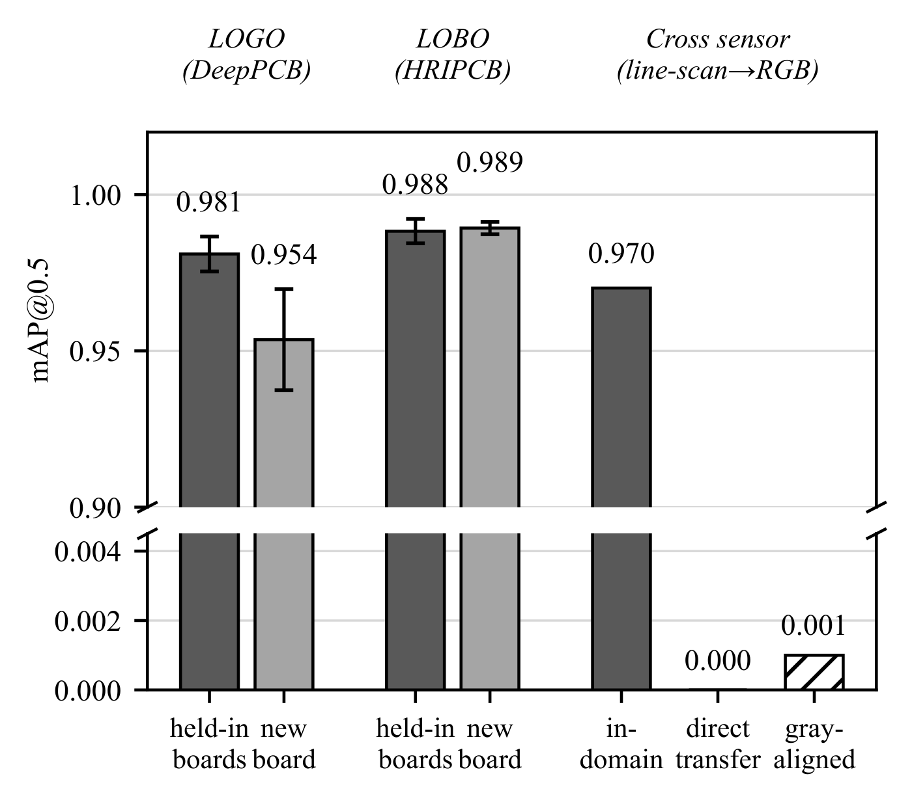

CONFERENCE PAPER
Layout, Sensor, or Scarcity? A Cold-Start PCB Defect-Detection Benchmark and Decision Guide for New Product Introduction
- 作者
- Hong-Guang Chen 為第一作者暨通訊作者，共同作者 Cheng-Yu Yen、Ching-Yao Huang
- 會議
- IMPACT-IAAC 2026，第 21 屆 International Microsystems, Packaging, Assembly and Circuits Technology Conference，2026-10-19 至 22，台北南港展覽館
- 狀態
- 2026-07-22 經三位審查人 blind review 錄取，排定 Oral Presentation，Paper ID TW0145；2026-10-06 完成 IEEE Electronic Publication Agreement
- 結果
- 模型更換 board layout 後表現維持；更換 image sensor 後 mAP50 由 0.970 降至 0.000。論文據此提出新產品導入 NPI 時的 sensor 選型準則。
- 程式碼
- github.com/a413123a413123/pcb-coldstart-benchmark

© 2026 IEEE. Reprinted from H.-G. Chen, C.-Y. Yen, C.-Y. Huang, “Layout, Sensor, or Scarcity? A Cold-Start PCB Defect-Detection Benchmark and Decision Guide for New Product Introduction,” IMPACT-IAAC 2026.